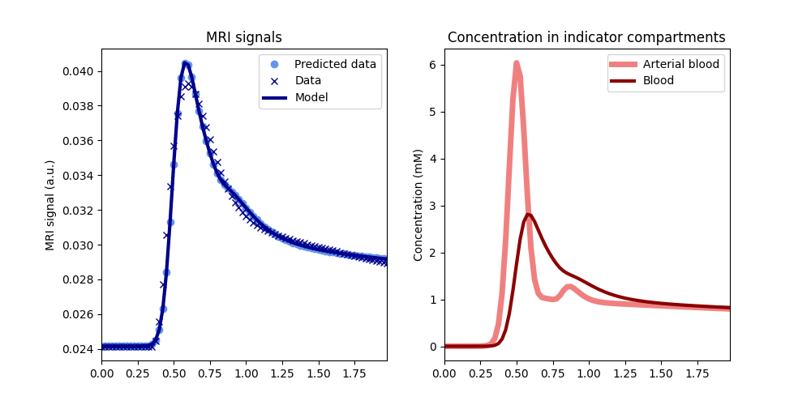
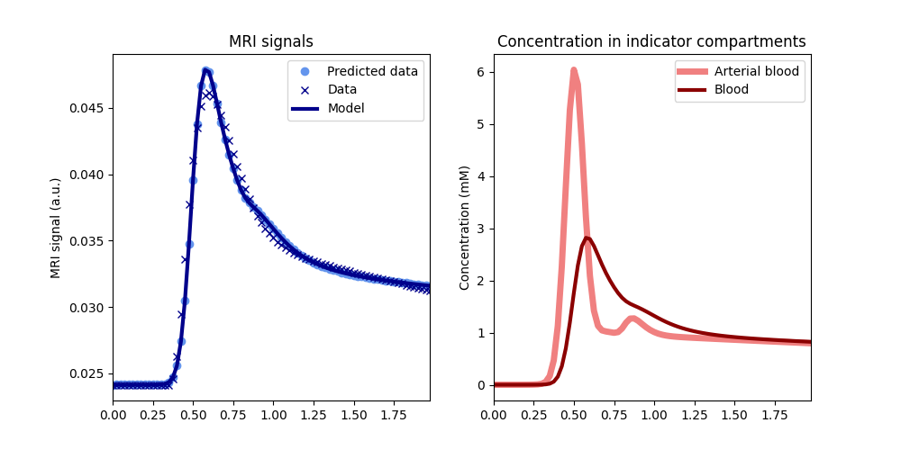

Note
Go to the end to download the full example code.
The role of Arterial Input Functions#
This tutorial will explore the role of the arterial input function (AIF) in DC-MRI analysis, including the effect of using population-average AIFs versus subject-specific AIFs.
Import necessary packages
import numpy as np
import matplotlib.pyplot as plt
import dcmri as dc
Why do we measure AIFs?#
We simulate a DCE-MRI experiment on the brain of two subjects (A and B) that are identical, except that A has a higher cardiac output (9 litres per minute or 150 mL/sec) than B (6 litres per minute or 100 mL/sec). Let’s simulate the signal-time curves that we would measure in grey matter.
# Define the experimental setup
tmax = 120 # Maximum acquisition time is 120 seconds (first-pass perfusion imaging)
dt = 1.5 # Temporal resolution is 1.5 seconds
t = np.arange(0, tmax, dt)
# Define the tissue properties
tissue = {
'kinetics': 'NX', # NX = No-Exchange of contrast agent is appropriate
# for brain tissue with intact blood-brain barrier.
'vb': 0.05, # Blood volume fraction is 5 mL/100mL in grey matter,
# or 0.05 in standard units of mL/mL.
'Fb': 0.01, # Blood flow is 60 mL/min/100mL in grey matter,
# or 0.01 in standard units of mL/sec/mL.
}
# Simulate the concentrations at the arterial inlet to the tissue.
# We use `aif_tristan` here as this allows us to modify the cardiac output:
ca_A = dc.aif_tristan(t, BAT=20, CO=150)
ca_B = dc.aif_tristan(t, BAT=20, CO=100)
# Generate tissue signals
sig_A = dc.Tissue(ca=ca_A, t=t, **tissue).signal()
sig_B = dc.Tissue(ca=ca_B, t=t, **tissue).signal()
# Compare the two signals:
plt.plot(t, sig_A, 'r-', label='Grey matter (subject A)')
plt.plot(t, sig_B, 'b-', label='Grey matter (subject B)')
plt.xlabel('Time (sec)')
plt.ylabel('Signal (a.u.)')
plt.legend()
plt.show()
The signals are very different, even though the grey matter of A and B is identical. The difference reflects the cardiac output, which is a confounder in an experiment that aims to characterise the brain tissue.
Any visual interpretation of the signal-time curves, or a descriptive analysis using parameters such as the area under the signal-enhancement curve, or maximum signal enhancement, would lead to the false conclusion that the grey matter of subject B is more perfused than that of subject A. The AIF avoids this pitfall, and ensures that any systemic differences between subjects are not misinterpreted as differences in tissue properties.
How is the AIF used?#
To illustrate how this works, let’s treat the signals generated above as measurements and use them to determine the unknown perfusion and vascularity of the grey matter of subjects A and B.
We create the tissue models again, but since the tissue properties are
now unknown, we do not provide the values of vb and Fb.
We assume the arterial concentrations are known from a separate measurement,
so these are provided as arterial input concentration to the model:
Tissue parameters:
[0.1, 0.02]
Ground truth:
[0.05, 0.01]
Now we adjust those parameters by training the models using the measured signals:
Tissue parameters (subject A):
[np.float64(0.05), np.float64(0.01)]
Tissue parameters (subject B):
[np.float64(0.05), np.float64(0.01)]
Thanks to the AIF, we correctly conclude from these data that the blood flow and the blood volume of the grey matter of A and B are the same, despite the very different appearance of the signals measured in the grey matter of both subjects.
The case for population AIFs#
The difficulty with the approach outlined above is that this requires an (accurate) measurement of the arterial concentration or signal in individual subjects. This is not a trivial problem. Feeding arteries are small for instance, in which case a concentration in pure blood may not be accessible; or they are far from the tissue of interest, causing bolus dispersion errors or differences in signal properties that are difficult to correct for; or they are measured in rapidly flowing and pulsating blood where standard signal models may be inaccurate.
If the arterial input is inaccurately measured, then the input to the tissue is misinterpreted, and this will translate to an error in the measured parameters. To illustrate this, let’s assume there is a partial volume error in the AIF of patient A, causing its arterial blood concentration to be underestimated by a factor 2:
Tissue parameters (subject A):
[np.float64(0.1), np.float64(0.02)]
Ground truth:
[0.05, 0.01]
The tissue perfusion is now overestimated with the same factor 2, which obviously could lead to entirely wrong conclusions as regards the grey matter health. An additional problem is that this type of error is difficult to control. If partial volume effects are present, they will cause different levels of overestimation in different measurements. So this not only causes a bias, but also a variability that will impact even on assessed changes over time in the same subject.
Addressing those issues by experimental design may be possible to some extent, but may also require changes that are incompatible with other constraints. For instance, partial volume errors can be reduced by increasing the image resolution, but this may lead to acquisition times that are too long for blood flow measurement.
An alternative approach that is sometimes proposed is to avoid the use of a
measured AIF alltogether, and instead use a standardized AIF measured once
using a similar experiment on a representative population.
A popular choice is the AIF derived by
Parker et al (2006),
which is implemented in dcmri as the function aif_parker.
Example using a population AIF#
To illustrate the implications of using a population-based AIF, lets analyse the data from our subjects A and B again, this time using a popular population-based AIF:
ca_pop = dc.aif_parker(t, BAT=20)
A = dc.Tissue(ca=ca_pop, t=t, kinetics='NX')
B = dc.Tissue(ca=ca_pop, t=t, kinetics='NX')
# Train the models using the measured signals for each subject:
A.train(t, sig_A)
B.train(t, sig_B)
# Check the fits:
A.plot(t, sig_A)
B.plot(t, sig_B)
# Check the values for the measured parameters:
print('Tissue parameters (subject A): ')
print(A.params('vb', 'Fb', round_to=4))
print('Tissue parameters (subject B): ')
print(B.params('vb', 'Fb', round_to=4))
print('Ground truth:')
print([tissue['vb'], tissue['Fb']])
- 
- 
Tissue parameters (subject A):
[np.float64(0.0398), np.float64(0.0036)]
Tissue parameters (subject B):
[np.float64(0.0597), np.float64(0.0054)]
Ground truth:
[0.05, 0.01]
The fit to the data is good and the measurements of vb are not so far
off the ground truth (0.05): underestimated for subject A (0.04)
and overestimated for subject B (0.06). The estimates
for the blood flow values are a factor 2.8 and 1.8 underestimated,
respectively. Apart from these biases, the analysis also leads to the (false)
conclusion that the cerebral blood volume and -flow values of B are 50%
higher than A.
Hence, while a suitable chosen population AIF may produce values in the correct order of magnitude, it suffers from the same fundamental problem as descriptive or qualitative curve-type analyses that between subject differences in tissue curves are interpreted as reflecting tissue properties, even if in reality they are due to systemic differences (cardiac output in this example).
Choice of a population AIF#
The comparative accuracy of the absolute values reflects the fact that the experimental conditions under which the population-average AIF from Parker et al was derived are actually very similar to this example (standard dose and injection rate of a standard extracellular agent).
Plotting the population AIF against that of our subjects A and B shows that they are indeed in the same range of concentrations:
We can investigate this more quantitatively by fitting the population AIF
to an aorta model. Since the Aorta model predicts signals rather than
concentrations, we need to first convert the concentrations to signals:
cb = (1-0.45)*ca_pop # Convert to blood concentration using standard Hct
R10 = 1/dc.T1(3.0, 'blood') # Precontrast R1 for blood at 3T
r1 = dc.relaxivity(agent='gadodiamide') # Relaxivity of the agent
R1 = R10 + r1*cb # Relaxation rate as a function of time
sig_pop = dc.signal_ss(1, R1, 0.005, 15) # Signal as a function of time
Now we can train the Aorta model, setting the experimental parameters to match the conditions of the original paper (Parker et al 2005). We use a chain model for the heart-lung system, which is relatively slow but provides a better fit to high-resolution first pass data than the default ‘pfcomp’. The defaults for the other constants (field strength, flip angle etc) are correct so do not need to be provided explicitly:
We can also have a look at the fitted parameters:
aorta.print_params(round_to=2)
--------------------------------
Free parameters with their stdev
--------------------------------
Bolus arrival time (BAT): 17.82 (0.6) sec
Cardiac output (CO): 165.95 (4.45) mL/sec
Heart-lung mean transit time (Thl): 10.55 (0.65) sec
Organs blood mean transit time (To): 39.38 (2.67) sec
Body extraction fraction (Eb): 0.15 (0.02)
Heart-lung dispersion (Dhl): 0.11 (0.01)
----------------------------
Fixed and derived parameters
----------------------------
Signal scaling factor (S0): 0.89 a.u.
The cardiac output of the populaton AIF is 162 mL/sec, higher than the values for either subject A or B. This is consistent with the systematic underestimation in the blood flow values observed.
# Choose the last image as a thumbnail for the gallery
# sphinx_gallery_thumbnail_number = -1
Total running time of the script: (0 minutes 0.993 seconds)